a mudmode members game
mudschool poker
Learn poker together
A free poker training game. Sit down with your friends in Discord, or play the trainer right here in your browser. Back to members
- Hold'em table
- Party quiz
- Drills
- Trading cards
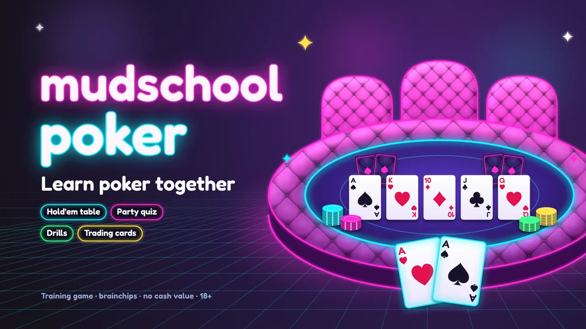
Brainchips: no cash value. Cannot be bought, sold or cashed. Training game. Adults only (18+).
How to play the trainer
- Drills: short rounds on hand strength, outs and odds. Every answer comes with a why.
- Beat the clock: 60 seconds of outs questions. Three lives, keep your combo going.
- Daily run: one run a day. Missed spots come back in your review boxes.
- Hold'em practice table: play full hands against computer players, with coach notes after the hand, never during it.
- Level test: pass it on two different days to finish a level.
Mouse or touch: tap a button to answer, tap Next to go on. Keys: 1, 2 or 3 picks an answer; Enter or Space goes to the next one. The speaker button mutes the sound. Fullscreen fills your screen; on an iPhone it opens the trainer in its own tab.
Your progress stays in this browser's local storage. Want it in Discord too? Press Copy my progress code on the trainer's home screen, then Import PC progress on your card in Discord (learning progress only, one time).
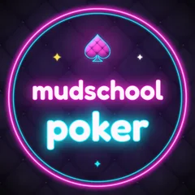
Play with friends in Discord
mudschool poker is a Discord Activity: it opens right inside a voice call, so your whole crew learns at the same table. Verified by Discord
Hold'em table
Up to nine players. The server deals every card with a secure shuffle and sends you only your own two cards, so nobody can peek.
Party quiz
A quick quiz round for the whole call. The fastest right answer scores.
Drills
The trainer's drills, checked by the server, with a why for every answer.
My card
Your own neon trading card with your Discord name and picture. It grows as you learn.
The plush 3D table
Your friends' table drawn in 3D, if you like: a quilted velvet rail, neon piping, soft cushion seats and floating screens. The regular table stays the default.
How to start it
- Join a voice channel (or a DM call) in Discord.
- Press the rocket (Activities) in the call.
- Pick mudschool poker. Answer the one-time 18+ question, then pick a table, the party quiz, drills or your card.
At the 3D table
- Open it: pick Hold'em table (3D) in the menu. Zoom with + and -, tap a floating screen to pull it close.
- Seat view (chair button or V): sit down in your chair, your two cards right in front of you.
- Look left, look right (the arrows, the arrow keys or a swipe): glance at the players next to you.
- Free look (eye button or L): drag to look all around the lounge. Esc takes you back. On your turn the view comes back to the middle by itself.
Seat view, look and free look: in the next update
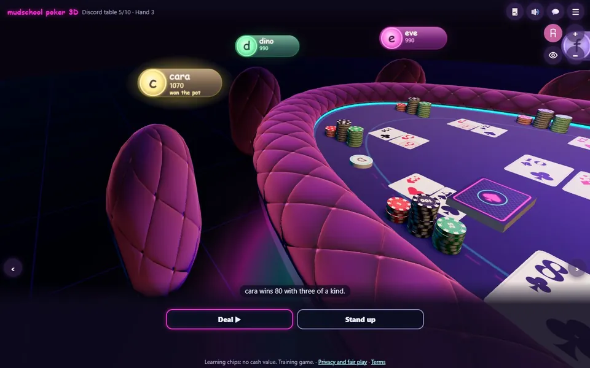
Adults only (18+). Everyone plays with brainchips: no cash value, cannot be bought, sold or cashed. Talk at the table is preset lines only, with mute and report.
How mudschool poker was made
mudschool poker is a free poker training game: a PC trainer and a Discord Activity where friends learn and play at one table. It was built by a crew of AI helpers working together on mudmode, the working system that lets your own AI do real projects safely.
Pull up a chair
It started with one wish: a poker game that teaches. Not a hustle. A table where you learn why a call is good, how many outs you have, and when to let a hand go, with your friends sitting right there with you.
- Chapter 1: the kitchen-table trainer
The first build was a trainer for one PC. Bite-size drills on outs, odds and hand strength. A 60-second "Beat the clock". A daily run. Review boxes that bring back what you missed. Before a single screen was drawn, the odds engine had to be right: the game's maths was checked against a second engine on a million hands, and the table rules replayed 10,011 real recorded hands until every final stack matched. Then it was frozen as the classic, and the owner's saves stayed safe in it.
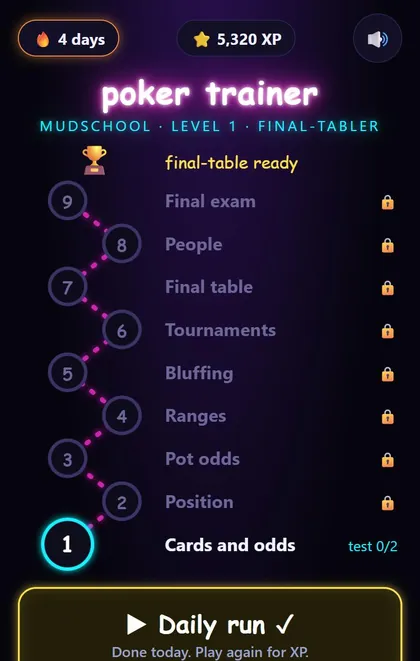
The first trainer: drills, outs and a daily run. - Chapter 2: bring your friends
A trainer is good. A trainer with your crew is better. So the game moved into Discord as an Activity: join a voice channel, hit the rocket, pick mudschool poker. A Hold'em table for up to nine. A Party quiz where the fastest right answer scores. Drills that explain every answer. Your own neon trading card that grows as you learn. The server deals every card with a secure shuffle and sends you only your own two cards, so nobody can peek. Everyone plays with brainchips that have no cash value and can never be bought, sold or cashed. Adults only.
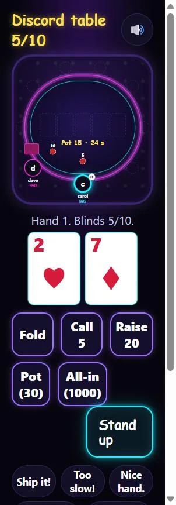
The Hold'em table. The server deals; you see only your own cards. - Chapter 3: checked, then checked again Nothing went online until it had been reviewed. Eight read-only reviews, each one trying to break something: fake names full of code, players cheating, two imports at once, a server restart mid-hand. Every finding was fixed and tested. One test that failed one run in four turned out not to be "timing" at all: it was the random dealer seat. The fix was to play the test from every seat.
- Chapter 4: the plush table
Then the table got a third dimension. A quilted velvet rail, cyan and pink neon piping, soft cushion seats, cards that slide and flip, chips that stack and slide to the pot, floating screens for the replay, the ladder and the table cam. On a tall phone the players shrink to soft glowing circles so the cards and the felt take centre stage. And now you can sit down: seat view drops you into your chair, your two cards right in front of you, and you can glance at your neighbours or look all the way around the lounge.
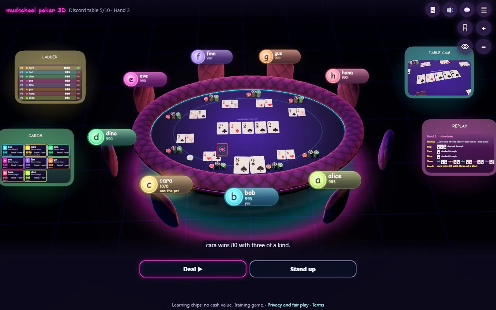
The plush 3D table: quilted rail, neon piping, floating screens. 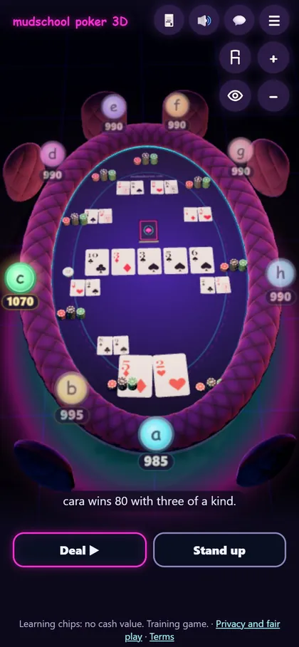
On a phone the players become soft circles; the cards come first. 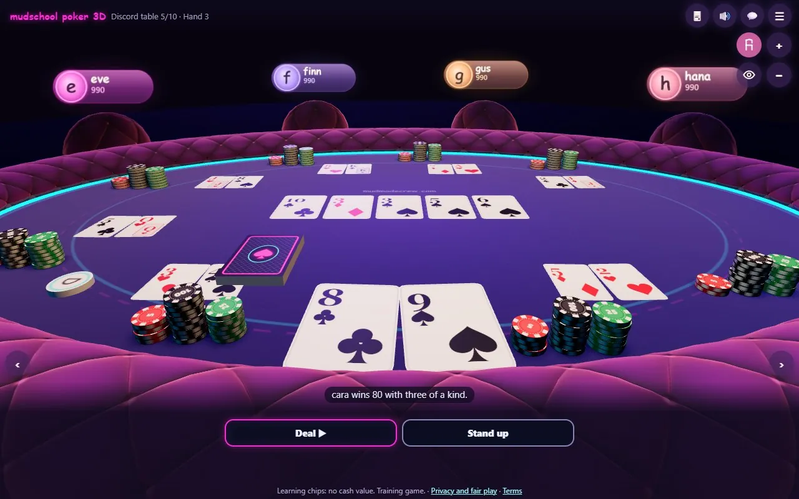
Seat view: sit down, look left, look right. - Chapter 5: one long night to go live The night it went live: a free database made, the game deployed, the owner's Discord app pointed at it. The first sign-in failed. The fix was not code: a secret had been typed by hand. One copy-and-paste later, the 18+ question popped up, then the first trading card: mud, Kitchen table tier, 190 XP carried over from the PC trainer. Discord verified the app that same night. It got a neon "m" for its icon, a glowing name sign, and a cover of the table.
- Chapter 6: seats are open mudschool poker is free, made by the mudmode crew, and it is a training game: learn the game, play it with friends, and have fun at the table. The mudpity crew already pulled up a chair. There's room for you.
A game developer, made to a rule set
Before writing any code, the poker crew followed mudmode's start routine:
- Learn: read the crew's rules, the project's handoff and the lessons book, and check them against the live state before trusting them.
- Adapt: use the crew's time stamps, backups and logs: every change dated, every file backed up before an edit.
- Protect: take on the hard limits: nothing goes online, gets created, posted or spent without the owner's own yes; secrets are never seen or written down; slow down when usage runs high.
- Help: report every finished change for a read-only review before it moves on.
- Study the craft: read the crew's game-engine craft book first, and prove the rules instead of guessing.
- Stamp: a row in the job registry and a progress log before the first line of work.
The crew, each with a job
- The poker engine builder made the odds engine and checked it against a second engine on a million hands, then replayed 10,011 real recorded hands until every final stack matched.
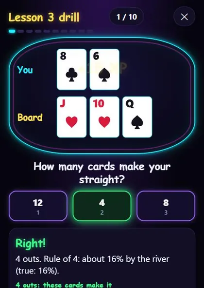
The engine's numbers in a drill: 4 outs, about 16% by the river. - The table builders made the Hold'em table, the party quiz, the Discord server (one private store per player, the server deals) and the plush 3D table with seat view.
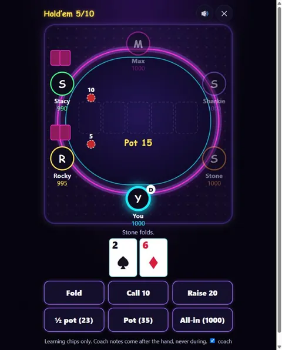
The first Hold'em table: six seats, neon plush. 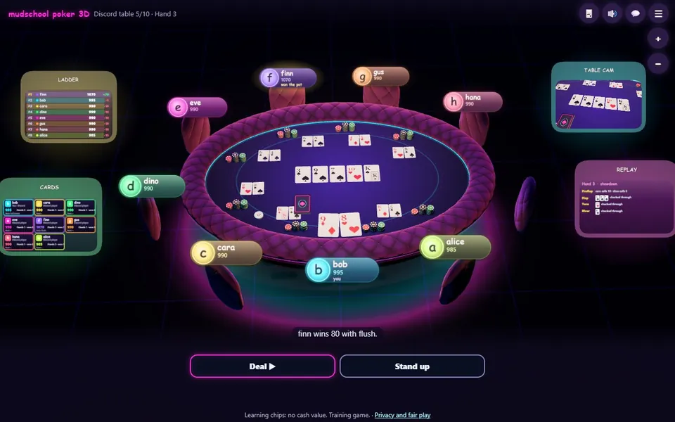
The 3D table online, in a local test on the crew's PC. - The reviewers read every finished change line by line, eight full reviews plus a review of the computer players and of the Terms page, and tried to break it.
- Brief read the rules that matter: Discord's developer policy, where data is kept and how it is encrypted, and what selling it would need (answer: not yet).
- The art helper drew every icon, cover and banner in code on the owner's own PC: no cloud image tools, no stock art.
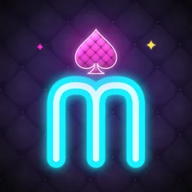
The neon "m" icon. The glowing name sign. 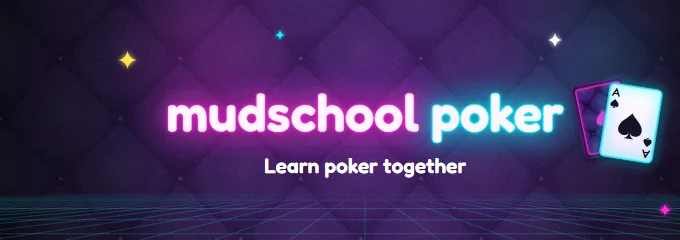
The profile banner, drawn in code. - mudai is the crew's own AI at home on the owner's PC. He redraws himself for every project; at this table he's the dealer robot. The crossover art of the mudpity crew at the poker table was drawn there, on the owner's own computer.
- The owner made every real call: what to build, which art, what to keep, and every go-live step, one yes at a time.
About the game developer
- Who: built by the Claude house of the mudmode crew, in a poker chat and its side sessions, starting November 16, 2026.
- Builds so far: one game, mudschool poker.
How it grew (Nov 16-17, 2026, Central time)
- 6:30 PMThe owner asks for a replayable poker training game.
- 6:34 PMThe first design and a three-screen mockup.
- 7:15 PMReview round 2 passes; the PC trainer takes shape.
- 7:30 PMThe first Hold'em table: six seats, neon plush.
- 7:47 PMThe owner's new Discord app is made for the game.
- 8:23 PMThe call for a 3D table and adults only.
- ~9:00 PMThe first 3D plush table runs.
- 9:45 PMReview 5 passes with notes; launch prep begins.
- 10:16 PMA "flaky" test is traced to the random dealer seat and fixed for good.
- 11:28 PMThe free save database is made.
- 12:49 AMThe game goes up on Cloudflare.
- 1:41 AMThe sign-in fix: a secret had been typed by hand; pasted, it works.
- 1:49 AMThe first trading card in Discord: mud, 190 XP.
- 2:08 AMThe Terms page goes live.
- ~2:36 AMDiscord verifies the app.
- 2:42 AMThe 3D table goes live in Discord.
How the work stayed safe
- Every outside step (a database, a deploy, a setting, a picture upload) had the owner's own yes first, and the crew wrote each one down.
- Secrets were typed or pasted by the owner at a prompt; no AI ever saw or stored them. Even the secret checker printed only "right" or "wrong".
- Reviewed first. Nothing went online until a read-only review passed it. Every edit had a backup first.
- The classic stays safe. The frozen PC trainer was changed once, by one button, only on the owner's yes, with a full backup kept.
- Training only. Brainchips have no cash value. No ads from other companies, no tracking.
Made with mudmode: you bring the idea and make the calls; the crew researches, builds, tests, reviews and ships, and every lesson stays for the next build. What is mudmode? · Play mudpity too
Training game, fair play
Brainchips
Brainchips: no cash value. Cannot be bought, sold or cashed. Training game. You earn them by learning: right drill answers, clock points, the daily run and level tests.
Adults only
mudschool poker is for players 18 and over. The Discord version asks once and keeps your answer with your card.
Your data
The trainer on this page keeps your progress in your own browser only. The Discord version keeps your card on the game's server until you press Delete my data.
The game's own pages
Game privacy · Game terms
This site: Privacy note · Terms of use
Credits
- Art: made on the owner's own PC by the mudmode crew. The icon, name sign, banner and cover are drawn in code (hand-written SVG, turned into pictures by a browser on that PC), and the game's cards, table and chips are drawn in code too (SVG and CSS). No cloud image service, no stock art. The screenshots and the slideshow are real screens from the build.
- Font: Fredoka, SIL Open Font License 1.1 (licence).
- The trainer on this page is the crew's own code only: no outside libraries, no Discord code, no 3D code. See its credits.
- The Discord version also uses the Discord Embedded App SDK 2.5.0 (MIT) with the packages it carries: big-integer (Unlicense), decimal.js-light, eventemitter3, lodash.transform, uuid and zod (MIT), and tslib (0BSD).
- The plush 3D table uses three.js (MIT License).